Manual de HTML5
¡Bienvenido a la aplicación de Manual de HTML5!
Esto es una práctica sobre HTML, CSS y JavaScript para el módulo Lenguajes de Marcas y Sistemas de Gestion de Información, del Ciclo Superior de Formación Profesional de Desarrollo de Aplicaciones Multiplataforma.
Puedes empezar a navegar ya para conocer más sobre HTML, CSS y accesibilidad.
Estructura básica
La estructura básica de un html esta compuesta por una serie de etiquetas que listaremos a continuación:
- html
- head
- body
Etiqueta html
Esta etiqueta engloba la página al completo, delimitando su inicio y su fin.
Etiqueta head
Esta es la primera etiqueta que se encuentra en la página html, es la cabezera de la misma e incluye todos los elementos no visibles necesarios para el funcionamiento de la página y también, la etiqueta "title", la cual indica el título de la página, mostrado en la pestaña del navegador usado.
Etiqueta body
Esta etiqueta es la que tiene todo el contenido de la página y a su vez el resto de etiquetas usadas en la misma como por ejemplo etiquetas de formato de texto, de listas, multimedia...
Uso de las etiquetas
Todas las etiquetas de un html se incorporan entre "<" y ">", para poder cerrar una etiqueta se usaria
de la siguiente forma "</" y ">"
Por ejemplo, al usar la etiqueta html se escribiria de la siguiente manera:
"<html>Contenido de la página</html>"
Formato de texto HTML.
Introducción.
Una etiqueta HTML es un término rodeado por un signo de menor y otro de mayor; por ejemplo:
<strong>
Esta etiqueta indica que el texto que aparece a continuación se debe destacar sobre el resto; normalmente en negrita.En muchos casos necesitaremos una segunda etiqueta que delimita el final para que el texto que queda fuera de las etiquetas no se destaque, para ello usamos la misma etiqueta con una barra:
</strong>
Las dos etiquetas y el texto que contienen conforman un elemento HTML. Algunos elementos requieren esa apertura y cierre, otros casos sólo necesitan una etiqueta, ya que reflejan un elemento puntual o con un contenido vacío. Por ejemplo:
<hr />
hace que en el documento aparezca una línea que separa el texto. Cuando un elemento no va a tener una etiqueta de cierre (no existe un </hr>), el indicador de fin se añade en la propia etiqueta.Nota: Todas las etiquetas HTML se escriben siempre en minúsculas. Aunque los navegadores son capaces de interpretar las etiquetas en mayúsculas, las normas de la W3C especifican que todas las etiquetas se debe escribir en minúsculas.
Una característica importante de las etiquetas es que son anidables, podemos definir un párrafo (mediante las etiquetas <p> y </p>) y en su interior incuir una lista de elementos, imágenes, texto destacado, etc. empleando diferentes etiquetas. Veremos muchos ejemplos al respecto.
Parámetro de las etiquetas
Muchas etiquetas HTML necesitan contar con parámetros para funcionar correctamente. Éstos son modificadores que se introducen entre los signos de apertura y cierre para definir algún matiz del elemento HTML.
Por ejemplo, la etiqueta <img> se emplea para insertar una imagen en la página web, pero por si sola no funciona correctamente. Necesita un parámetro en el que indiquemos la imagen que queremos mostrar. Quedaría así:
<img src=”fotodelgrupo.jpg”>
En el ejemplo siguiente, además de indicar qué imagen se mostrará, establecemos el tamaño que ocupará en la pantalla:
<img src=”fotodelaula5.jpg” width=”300px” height=”150px”>
Los parámetros se identifican por un término, seguido de un signo de igual seguido del valor que le queramos asignar entre comillas.Nota: Se pueden usar comillas simples pero normalmente se usan comillas dobles para englobar el valor de los parámetro.
Etiquetas de forma de texto
Hay etiquetas que se emplean para destacar partes de un texto, como por ejemplo lo son:
• <strong> y </strong>: para destacar una parte del texto. Representa el texto incluido entre las etiquetas en negrita.
• <em> y </em>: se emplea para enfatizar un texto; se suele representar en cursiva.
• <i> e </i>: hacen que un texto se muestre en cursiva. Su significado dentro del lenguaje HTML es diferente que en el caso anterior.
Como la mayoría de las etiquetas HTML se pueden anidar para que el texto tome las características que otorga cada etiqueta, en este caso con negrita y cursiva. Quedaría de la siguiente manera:
El bloque siguiente es muy importante
Nota: Al anidar diferentes etiquetas hay que mantener el orden al cerrarlas. La última que abrimos será la primera en cerrarse.
Junto a <strong> y <em> tenemos otras etiquetas destinadas a dar sentido a una parte concreta de la página web: <dfn> para definiciones, <code> para bloques de código informático, <samp> para ejemplos, <kbd> para texto de teclado, <var> para definir una variable y <cite> para una cita. Cada uno tiene una apariencia pero son facilmente modificables, veremos más adelante como. La importancia de las etiquetas reside en darle un significado específico al texto.
Esas son todas las etiquetas para destacar una parte de un texto. En versiones antiguas de HTML existían otras etiquetas muy utilizadas como <b>, <i>, <font>, etc., pero han sido abandonadas en las últimas revisiones del lenguaje HTML. Ahora para aplicar formato a una web se emplean los estilos.
Estilos
En las ediciones actuales de HTML se hace hincapié en separar el contenido y su apariencia. Por esto, todo lo relazionado con la parte estética de la web se deja a CSS.
CSS es el acrónimo de Cascade Style Sheet (hojas de estilo en cascada), un estándar que apareció al mismo tiempo que HTML4 y que nos proporciona todos los elementos que necesarios para modificar la apariencia de nuestra página web.
Con CSS definimos cómo debe mostrar un elemento HTML, estableciendo aspectos habituales como tamaño, color, tipografía o bordes. Nos permitirá modificar la apariencia de todas las páginas del sitio web, de sólo una de ellas o incluso de elementos dentro de la página.
Con los estilos separamos diseño de contenido, obteniendo importantes ventajas. Las dos principales son éstas:
• Automáticamente se vuelve muy sencillo modificar cuestiones de diseño a través de un sitio web complejo. Podemos cambiar el tipo de letra de todo un portal web con tan sólo modificar una línea de un archivo.
• Las páginas son más limpias, cargándose más rápido, contando con menos errores y sobre todo más accesibles en todos los sentidos.
Aplicar estilos
Se pueden aplicar de 3 formas distintas:
• Estilos en un archivo externo: definimos una serie de reglas CSS en un archivo, que enlazaremos desde nuestra página web, en la cabecera de la misma. Es el método más aconsejado y el que emplearemos en el futuro.Por ahora nos centraremos en la tercera vía. Observemos este ejemplo:
• Estilos en la cabecera de la página web: en la cabecera indicamos las reglas CSS que necesitemos, afectan sólo a la página web en cuestión.
• Estilos en la página web: podemos aplicar estilos dentro de un elemento concreto de la página web, mediante el parámetro style que se puede establecer para cualquier etiqueta.
<h1> Qué entendemos por un párrafo </h1> <p>Un párrafo de texto se compone de un bloque de texto independiente con una apariencia concreta, delimitado por un espacio superior y otro inferior.</p>
Vamos a modificar el aspecto de esos dos elementos HTML, con tan sólo incorporar el parámetro style en cada uno de ellos seguido de algunos valores.
<h1> style="color: rgb(200, 20, 20); font-family: Helvetica,Arial,sans-serif;">Qué entendemos por un párrafo </h1><p style="font-style: italic; color: rgb(20, 20, 200);"> Un párrafo de texto se compone de un bloque de texto independiente con una apariencia concreta, delimitado por un espacio superior y otro inferior.</p>
Detengámonos un momento en cada caso:
• En el primero hemos establecido dos elementos CSS, color para definir un tono rojo (volveremos más adelante sobre el color) y el tipo de letra mediante font-family.
• En el segundo, hemos indicado que todo el párrafo se mostrará en cursiva (font-style: italic) y en un tono azul, mediante el valor color.
Cada par de elementos CSS especifican su valor depués del signo dos puntos y se separan con punto y coma; así se pueden añadir todas variaciones necesarias.
La etiqueta span
En el ejemplo anterior modificabamos un bloque de texto completo o un título completo, para modificar sólo una frase dentro de un párrafo o una palabra usamos el elemento HTML <span>.
Con <span> y su correspondiente cierre podemos realizar agrupaciones dentro de bloques de texto. Visualmente no hay cambio, pero al crear agrupaciones podremos aplicarle estilos CSS a ese bloque. Continuando con el ejemplo anterior, mediante el uso de span modificamos una sola palabra del título y una parte del párrafo.
<h1>Qué entendemos por un <span style="color: rgb(0, 153, 0);">párrafo</span></h1><p color:="rgb(20, 20, 200);">Un párrafo de texto se compone de un <span style="font-weight: bold; color: rgb(255, 0, 0);"> bloque de texto independiente </span> con una apariencia concreta, delimitado por un espacio superior y otro inferior.</p>
En el caso del título hemos hecho que un "Párrafo" aparezca en verde. En el párrafo, hemos mantenido el color del texto, pero "bloque de texto independiente" se mostrará de color rojo y en negrita (font-weight:bold). La figura muestra la apariencia del conjunto.
Qué entendemos por un párrafo
Un párrafo de texto se compone de un bloque de texto independiente con una apariencia concreta, delimitado por un espacio superior y otro inferior.
Elementos de bloque o en linea
Elementos a nivel de bloque
Los elementos en HTML (Lenguaje de marcada para hipertextos - hypertext markup language) usualmente son elementos a "nivel de bloque" o elementos "en línea". Un elemento a nivel de bloque ocupa el espacio de su elemento padre (el contenedor), creando así un "bloque." Este artículo ayuda a explicarlo.
Los navegadores típicamente presentan los elementos a nivel de bloque con un salto de línea antes y después del elemento.
Elementos de bloque
HTML
<p>Este párrafo es un elemento en bloque; este fondo se ha coloreado para mostrar elemento principal (o padre) del párrafo.</p>Este párrafo es un elemento en-bloque, su fondo ha sido coloreado para mostrar el padre del párrado
CSSS
p { background-color: #8ABB55; }USO
• Los elementos de bloque sólo deben aparecer dentro del elemento <body>.
Elementos en bloque vs elementos en linea
La diferencia entre elementos en-línea y en-bloque son:
• Formato: Por defecto, los elementos en-bloque comienzan en una nueva linea.
• Modelo de contenido: Generalmente ,los elementos en-bloque pueden contener elementos en-línea y otros elementos en-bloque. Por lo tanto, los elementos en-bloque crean estructuras más grandes que los elementos de linea. La distincion entre elementos en-bloque vs elementos en-línea es utilizada en las especificaciones HTML hasta la 4.01. En HTML5, es reemplazada por un conjunto más completo de categorias de contenido. La categoría de "en-bloque" se corresponde aproximadamente con la categoría de contenido dinámico en HTML5, mientras que "en-línea" se corresponde con el contenido de de pharsing , pero hay categorías adicionales.
Elementos
La siguiente es una lista completa de todos los elementos en-bloque de HTML (aunque "en-bloque" no se define técnicamente para los elementos que son nuevos en HTML5). <address>Información de contacto.
<article> HTML5
Contenido de Articulo.
<aside> HTML5
Contenido adicional.
<audio> HTML5
Reproductor de audio.
<blockquote>
Bloque de "cita".
<canvas> HTML5
Lienzo de Dibujo.
<dd>
Descripción de definición.
<div>
División de documento.
<dl>
Lista de definición.
<fieldset>
Etiqueta de conjunto de campos.
<figcaption> HTML5
Figura.
<figure> HTML5
Grupos contenido multimedia con una leyenda (ver <figcaption>).
<footer> HTML5
Sección o pie.
<form>
Formulario de entrada.
<h1>, <h2>, <h3>, <h4>, <h5>, <h6>
Niveles de cabecera (1-6).
<header> HTML5
Sección o cabecera de página.
<hgroup> HTML5
Información de cabeceera de grupos.
<hr>
Regla Horizontal (línea divisoria).
<li>
Elemento de lista.
<main>
Engloba el único contenido central del documento.
Elementos en linea
Los elementos en HTML (Lenguaje de marcada para hipertextos - hypertext markup language) usualmente son elementos a "en linea" o elementos "en bloque". Un elemento en línea ocupa sólo el espacio acotado por las etiquetas que lo definen. El siguiente ejemplo demuestra la influencia de un elemento en línea:
HTML
Este span es un elemento en línea; este fondo se ha coloreado para mostrar el principio y fin de la influencia del elemento en línea
CSS
p { background-color: #8ABB55; }Elementos en linea vs elementos en bloque
• Modelo de contenido: Generalmente, los elementos en-línea, sólo pueden contener algún dato u otros elementos en-línea.
• Formato: Por defecto, los elementos linea no comienzan en una nueva linea.
Elementos
• b, big, i, small, tt.
• abbr, acronym, cite, code, dfn, em, kbd, strong, samp, var.
• a, bdo, br, img, map, object, q, script, span, sub, sup.
• button, input, label, select, textarea.
Etiquetas semánticas de HTML
Las etiquetas semánticas son las que indican qué es el contenido que contienen, en lugar de cómo se debe formatear al mostrar el documento HTML en un cliente web. Dentro del etiquetado semántico hay un conjunto de ellas que son las que sirven para definir el esquema principal del documento, como HEADER, ARTICLE, FOOTER, etc. Todas esas etiquetas semánticas nos indican qué es el contenido que engloban y cuál es su relación con el conjunto de elementos del documento HTML.
Etiquetas semánticas estructurales
Las etiquetas semánticas estructurales nos sirven para que los motores de búsqueda, o cualquier otro mecanismo automático que lea un sitio web, sepa con exactitud qué partes de su contenido corresponden a cada una de las partes típicas de un sitio. Generalmente, en cualquier documento tenemos una cabecera, un cuerpo y un pie de página, elementos que definen la estructura representados por diversas etiquetas.

De este modo, HTML5 tiene una etiqueta HEADER, que debe englobar aquellos elementos correspondientes a la cabecera de la página. Tiene un FOOTER, que debe englobar todas las etiquetas que componen el pie. Luego, para el cuerpo realmente no existe una etiqueta en concreto, sino que se representará por diversas otras como SECTION, ARTICLE o ASIDE. Existirán además otras etiquetas que representan elementos típicos como la barra de navegación, etiqueta NAV.
Estas etiquetas semánticas del HTML5 son un paso adelante en cuanto a crear una web con un contenido mejor formado, más útil y procesable con mayor facilidad por cualquier sistema informático.
Aquí podeis ver una tabla con las nuevas etiquetas semánticas de HTML5
| Etiqueta | Descripcion |
| <article> | Define un articulo |
| <aside> | Define el contenido aparte del contenido de la página |
| <details> | Define detalles adicionales que el usuario puede ver u ocultar. |
| <figcaption> | Define un título para un elemento <figure> |
| <figure> | Especifica contenido autónomo, como ilustraciones, diagramas, fotos, listas de códigos, etc. |
| <footer> | Define un pie de página para un documento o sección. |
| <header> | Especifica un encabezado para un documento o sección |
| <main> | Especifica el contenido principal de un documento. |
| <mark> | Define el texto marcado/resaltado |
| <nav> | Define enlaces de navegación |
| <section> | Define una sección en un documento |
| <summary> | Define un encabezado visible para un elemento |
| <time> | Define una fecha/hora |
Pulsa aquí para obtener mas información sobre las etiquetas semánticas.
Listas en HTML
Tenemos dos tipos: ordenadas y desordenadas. Para ambas, los elementos que contienen deben ir entre las etiquetas <li></li>.
Listas ordenadas
Para las listas ordendas usamos la etiqueta <ol>.
Los elementos deben ir entre las etiquetas <li> </li>.
Ejemplo de lista ordenada:
- Primer elemento.
- Segundo.
- Tercer elemento de la lista.
Podemos usar diferentes numeraciones, como números romanos, letras, números romanos en minúscula, letras mayúsculas, etc. Ejemplo: <ol type="a|A|i|I|1"> </ol>."
Ejemplo de lista ordenada con números romanos, usando <ol type="I"> </ol>:
- Primer elemento.
- Segundo.
- Tercer elemento de la lista.
Ejemplo de lista ordenada con letras, usando <ol type="a"> </ol>:
- Primer elemento.
- Segundo.
- Tercer elemento de la lista.
Ejemplo de lista en orden inverso usando <ol reversed> </ol>:
- Primer elemento.
- Segundo.
- Tercer elemento de la lista.
Listas desordenadas
En las listas desordenadas usamos la etiqueta <ul>.
Cada elemento debe ir entre las etiquetas <li> </li>.
Ejemplo de lista desordenada:
- Primer elemento.
- Segundo.
- Tercer elemento de la lista.
Lista desordenada con <ul type="square"> </ul>:
- Primer elemento.
- Segundo.
- Tercer elemento de la lista.
Lista desordenada con type="disc" (recuerda que no hace falta cambiar nada en los <li>:
- Primer elemento.
- Segundo.
- Tercer elemento de la lista.
Lista desordenada con type="circle":
- Primer elemento.
- Segundo.
- Tercer elemento de la lista.
Listas de listas
Ejemplo de lista anidada:
- Café
- Té
- Té negro
- Té verde
- Leche
Pulsa aquí para obtener mas información sobre las listas.
Tablas
Las tablas son un conjunto de filas y columnas que son muy útiles para poder organizar información. La intersección entre una fila y una columna es una celda, y puede contener todo tipo de formato, incluso otra tabla.
Tablas sencillas
Las tablas son definidas con la etiqueta <table> y </table>. Después de definir la tabla introduciremos filas con la etiqueta <tr> y </tr> (table row) y dentro de ésta columnas con <td> y </td> (table data).
Vamos a ver un ejemplo de tabla simple, además le añadiremos el atributo border para que tenga borde y sea más visual.
| IdEmpleado | Nombre |
| Federico | Barbosa |
| Nico | Cerofolini |
| Pietro | Costa |
Título y cabeceras
Si queremos que la tabla incluya celdas en negrita o de cabecera utilizaremos la etiqueta <th> y </th> (table header) en lugar de <td>.
Además, podremos añadirle un título a la tabla con <caption> y </caption>. Junto a las cabeceras, quedaría de la siguiente forma:
| IdEmpleado | Nombre |
|---|---|
| Federico | Barbosa |
| Nico | Cerofolini |
| Pietro | Costa |
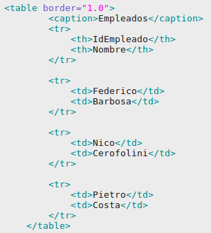
Atributos
Los atributos que podemos ponerle a la tabla son los siguientes:
| Atributo | Descripción |
|---|---|
| border | Indica en píxeles la anchura del borde de la tabla. |
| cellpadding | Espacio en píxeles entre el borde de la celda y su contenido. |
| cellspacing | Espacio en píxeles entre celda y celda. |
| width | Anchura de la página, expresado en píxeles o porcentaje de la página. |
| rules | Opción para elegir que bordes se mostrarán.
|
División de elementos
Podemos dividir la tabla en tres partes para poder tener un formato distinto a cada una de ellas. Las partes son:
- <thead></thead> agrupa la cabecera de la tabla.
- <tbody></tbody> especifica el cuerpo de la tabla.
- <tfoot></tfoot> especifica el pie de la tabla.
Combinación de celdas
Para conseguir tablas más eleboradas podemos combinar las celdas de la tabla, para ello se hace uso de los siguientes atributos:
- rowspan Combina el número de filas indicado.
- colspan Combina el número de columanas indicado.
| Matemáticas | Conocimiento del medio | Educación física |
| Inglés | Matemáticas | |
| Recreo | ||
| Lengua | Lengua | Inglés |
| Educación física | ||
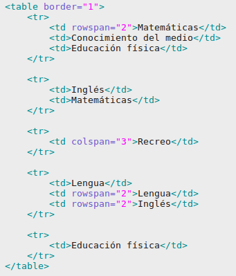
Conoce más sobre las tablas en W3Schools.
El modelo de cajas.
Cada elemento HTML que de una página web está rodeado de una caja con propiedades modificables.
Las propiedas son mostradas en la siguiente imagen:
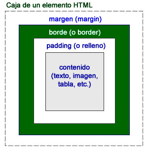Además del contenido, cada elemento puede tener un borde y, además, podemos modificar la distancia entre el borde y el límite de la caja (margin) y la distancia entre ese borde y el comienzo del contenido (padding).
Altura y anchura de una caja
Cada elemento HTML de una página web cuenta con una anchura y una altura. En muchos casos esas dimensiones se las proporciona el contenido, como por ejemplo una imagen. Esos valores de anchura (width) y de altura (height) pueden ser modificados mediante las hojas de estilo, gracias a las propiedades (width) y (height) nombre.
Así podemos ajustar el contenido de los bloques para que se ajusten debidamente a la pantalla.
Los valores (width) y (height) se acompañan de un valor numérico exacto o de un porcentaje.
body {principal { width: 400px; background-color: rgb(0, 126, 0);}Margen
Comenzaremos modificando el margen de una imagen. Usaremos la propiedad margin seguida de un valor numérico o de un porcentaje:
{ margin: 20px; }
Relleno
Probaremos ahora a modificar su relleno, es decir, la distancia imaginaria entre un borde y la imagen. Para ello emplearemos la propiedad padding, el proceso es el mismo que el anterior:{ padding: 5px; }
Borde
Si recargamos la página la imagen se separará un poco más, 5 píxeles por cada lado, pero para poder distinguir dónde acaba el efecto del margen y comienza el del relleno vamos a poner un borde en la imagen.
{border-width: 2px;border-style: solid;border-color: #007000;}
Esas propiedades respectivamente sirven para: definir el grosor del borde, el tipo de línea y su color.
Laterales
Tanto margin, como padding y border se pueden emplear para modificar los laterales de una caja, con independencia de los otros. Añadiendo a cada uno de ellos la variación -left (izquierda), -right (derecha), -top (arriba) o -bottom (abajo) conseguimos que sólo afecte al valor o valores indicados.
De la siguiente forma aplicariamos estas propiedades al título de la página:h1{ margin-top:40px; padding-left: 5px; padding-right:5px; border-top-width: 2px; border-top-style: dotted; border-top-color: #007000; border-bottom-width: 2px; border-bottom-style: double; border-bottom-color: #007000;}
Más opciones para los bordes
Para los bordes podemos definir tres propiedades: su anchura, su estilo y su color. La anchura y el color se definen con las medidas habituales y los sistemas que ya hemos analizado. El estilo, por su parte, se basa en una serie de valores concretos:
• dotted: punteado.El valor solid es la línea sencilla, la más empleada.
• dashed: línea discontinua.
• solid: línea continua.
• double: línea doble.
• groove: tipo de relieve.
• ridge: tipo de relieve.
• inset: tipo de relieve.
• outset: tipo de relieve.
• none: empleado para indicar que no habrá borde
Podemos reagrupar los valores referidos a los bordes en una sola propiedad genérica denominada border. Para ello establecemos los valores separados por espacios y en el orden de tamaño, estilo y color, en el siguiente ejemplo haríamos la misma función que en el anterior:
img { border: 2px solid #007000;}
Esquinas redondeadas
Podemos hacer un borde alrededor de una figura y que tenga sus esquinas redondeadas. La propiedad que lo permite es border-radius, acompañada de un valor numérico:
{ border: 2px solid #007000; border-radius:25px;}
Sombras
Las hojas de estilo actuales hacen posible que cualquier elemento proyecte una sombra. Con box-shadow podemos crear sombras en cualquier caja de nuestra página web, es decir, a cualquier elemento.
{box-shadow: 8px 8px 6px #aaaaaa; }
Los valores que conforman la sombra son similares a los que vimos para las sombras de texto, es decir, desplazamiento horizontal, vertical, difuminado y color de sombra.
Elementos flotantes
Los elementos de una página web pueden reubicarse a la izquierda o a la derecha con la propiedad float, haciendo que el resto del contenido se sitúe alrededor de ese elemento.
En el siguiente ejemplo la regla:{ float:left;}
Capas: etiqueta div
La etiqueta div
La etiqueta <div> se emplea para definir un bloque de contenido y aplicarle diferentes estilos y realizar operaciones sobre ese bloque específico.
Observemos este ejemplo:
<div>
<h1>Índice</h1>
Página principal<br />
Material multimedia<br />
Autores<br />
</div>
En este ejemplo hemos empleado la etiqueta para crear un bloque, que hará de índice de contenidos. Visualmente la etiqueta no provoca ningún cambio, pero en la estructura interna del documento hemos aplicado una división muy importante.
Podemos aplicar una modificación a la apariencia de ese bloque, añadiendo un estilo de borde a la etiqueta <div>:<div style="border: 2px solid rgb(204, 102, 204);"><br/>La etiqueta <div> configura espacios dentro de la página.
<h1>Índice </h1>
Página principal <br/>
Material multimedia <br/>
Autores<br/>
</div>
La etiqueta span
Después de un </div> se comienza con una nueva línea. Una de las principales diferencias es que con la etiqueta <span> es similar pero en el interior de un párrafo. Recordemos que span es utilizado usualmente para aplicar estilos en el interior de un bloque de texto.
Diferenciando las etiquetas div y span
Adicionalmente, las etiquetas div y span se suelen acompañar de uno o dos parámetros que identifican ese bloque:
• id: establece un identificador único para el bloque. Con él nos referiremos al bloque de forma inequívoca.
• class: es similar a id, pero con la ventaja de que se puede repetir; así que podemos tener varios <div> diferentes con la misma clase.
Usando id y class podemos diferenciar unos div de otros y aplicarles estilos CSS diferentes o hacer que actúen de forma distinta.
Las etiquetas id y class se utilizan como se muestra en el ejemplo:
<div id="indice">
<br>índice
</div>
<div class="destacado">
Este texto se destaca mediante un estilo.
</div>
<div id="articulo15" class="articulos_estandar">
Texto de un artículo
</div>
Las etiquetas id y class se pueden mezclar. Los id son únicos dentro de una página, mientras que los class se suelen repetir para que varios elementos tomen un mismo estilo
Ejemplo de uso de cajas
Hasta el momento todos nuestros elementos se han mostrado de forma similar, con un comportamiento secuencial. Veremos algunos cambios que se pueden aplicar al mostrar nuestros contenidos.
Para hacer nuestra pruebas emplearemos esta sencilla página web:
<!DOCTYPE html>
<html>
<head>
<meta http-equiv="content-type" content="text/html; charset=UTF-8">
<title>floating</title>
<link href="floating.css" rel="stylesheet" type="text/css">
</head>
<body>
<div id="bloque1">Bloque 1</div>
<div id="bloque2">Bloque 2</div>
<div id="bloque3">Bloque 3</div>
<div id="bloque4">Bloque 4</div>
</body>
</html>
Podemos aplicarle estilos de la siguiente forma:
body { background-image: url("resources/fondo.png"); font-family: Arial, Helvetica, sans-serif;}
div {width: 120px; height: 80px; background-color: rgb(82, 108, 142); color: rgb(245, 255, 244); margin: 10px; border-radius:5px; text-align: center;}
En CSS disponemos de la propiedad display para modificar la visualización de los elementos de la página.
Por ejemplo, al añadir a los valores de <div> la propiedad display:block, forzariamos a que antes y después del elemento seleccionado se produzca un salto de línea. Pero en este caso como los elementos delimitados por <div> siempre llevan ese salto de línea permanecería igual
Para apreciar el efecto de display, podemos aplicar la siguiente línea:
{display:inline;}
Los elementos se sitúan horizontalmente, sin saltos de línea. Se pierden sus dimensiones. En cambio, usando inline-block se distribuyen horizontalmente con sus características de bloque intactas.
{ display:inline-block;}
Elementos no mostrados
Otro valor interesante es none. Lo podemos probar de la siguiente forma:
div#bloque2 { display:none;}
La utilidad de esto es que con JavaScript, el lenguaje de script que podemos emplear en los navegadores es facil modificar durante la reproducción de la página una propiedad concreta de una hoja de estilos.
De la sguiente forma añadiríamos el código de un pequeño script a la cabecera de la página:
<!DOCTYPE html>
<html>
<head>
<meta http-equiv="content-type" content="text/html; charset=UTF-8">
<title>floating</title>
<link href="floating.css" rel="stylesheet" type="text/css">
<script language="JavaScript">
function mostrar() { document.getElementById('bloque2').style.display="inline-block";}</script>
</head>
<body>
<div id="bloque1" onmouseover="mostrar()">Bloque 1</div>
<div id="bloque2">Bloque 2</div>
<div id="bloque3">Bloque 3</div>
<div id="bloque4">Bloque 4</div>
</body>
</html>
Además hemos modificado el bloque 1 añadiendo un parámetro denominado onmouseover. Lo que sucede es que el <div> bloque1 será sensible al momento en el que el ratón pase sobre él. Se ejecutará una acción denominada mostrar, que localiza el bloque 2 (document.getElementById('bloque2')) y modificará su propiedad display (style.display="inline-block";).
Para ampliar
Transformaciones y prefijos
Entre las opciones que encontramos en las hojas de estilo modernas se encuentra la propiedad transform que se emplea para aplicar transformaciones a un elemento. Éstas son las opciones disponibles:• translate, translate3d, translateX, translateY, y translateZ: definen diferentes tipos de traslaciones sobre el objeto indicado.
• scale, scale3d, scaleY, scaleY y scaleZ: redimensionan el objeto, en su conjunto, en ejes parciales.
• rotate, rotate3d, rotateX, rotateY y rotateZ: aplican una rotación al objeto, como en los casos anteriores; se rota en su conjunto o sólo en un plano específico. Van seguidas de un ángulo.
• skew, skewX y skewY: realizan un abatimiento del elemento.
• perspective: modifica su perspectiva.
• matrix y matrix3d: definen una transformación utilizando 6 valores o 16 en el segundo caso.
Los prefijos
Las transformaciones nos sirven para explicar un pequeño inconveniente del uso de propiedades modernas. Ya que en algunos casos, las propiedades más actuales no funcionan en todos los navegadores, cada navegador la ha implementado forma distinta a la espera de que el grupo que define las hojas de estilo CSS3 complete la definición de propiedades.
Se pueden diferenciar añadiendo un prefijo específico diferente en cada caso. Así la propiedad transform es un caso prototípico, no funciona aún en ningún navegador.
• Internet Explorer puede realizar todas las transformaciones 2D, pero para ello usaremos su propia versión llamada -ms-transform.
• Firefox también hace lo mismo, pero con su versión llamada -moz-transform.
• Opera funciona como los dos anteriores, pero con una versión llamada -o-transform.
• Chrome y Safari, que emplean el mismo motor de presentación de páginas, además de las 2D hacen las transformaciones 3D ya, pero con su propiedad -webkit-transform.
Esta situación hace que si quisiéramos aplicar una rotación de 30 grados a un elemento y quisiéramos que funcionase en cualquier navegador, deberíamos añadir una propiedad similar a ésta:
div#bloque5 {-ms-transform:rotate(30deg);-moz-transform:rotate(30deg);-o-transform:rotate(30deg);-webkit-transform:rotate(30deg);}
Transiciones
Las transiciones permiten definir la velocidad y el momento en que se aplica una variación en una propiedad.
Al igual que con las transformaciones, las transiciones no están implementadas en ningún navegador sin utilizar los prefijos anteriores. Si lo hacemos, contaremos con las propiedades transition-property, que va seguida de alguna transición y transition-duration, seguida de un valor en segundos. Opcionalmente podemos añadir transition-delay para hacer una pausa, previa a la transición.
El resultado es una animación de duraciíon determinada. Un ejemplo es:
div#bloque1:hover {width:500px ;-webkit-transition-property: width;-webkit-transition-duration: 10s;-webkit-transition-delay: 1s;}
En Chrome, veremos cómo el elemento seleccionado incrementa su anchura durante 10 segundos cuando haya pasado 1 segundo desde que se cargó la página. Para que esto tenga lugar definimos el estilo como: hover (cuando el ratón pase sobre el elemento), también podríamos realizar la operación al pulsar un botón externo, usando eventos, etc.
Su funcionamiento consiste en transformar la anchura (transition-property: width) del elemento bloque1 para ampliar hasta los 500 píxeles pero, lo hará progresivamente durante 10 segundos (transition-duration).
Podemos indicar tantas propiedades como necesitemos y individualmente con transition-property seguido de las propiedades, o todas juntas con transition-property:all.
Animaciones
Las transiciones se pueden llevar un paso más allá con animaciones. El concepto es similar, pero utilizan fotogramas clave definidos a través de una especie de función dentro de la hoja de estilos.
Estas líneas definen la función y en ella podemos definir tantos estados como necesitemos. En el ejemplos estamos indicando que, cuando la animación esté al 50%, la anchura del cuadro debe haber crecido hasta los 500 píxeles, manteniendo su altura. En el 100%, además de esos 500 píxeles, la altura variará hasta los 300 píxeles y cambiará su color.
@-webkit-keyframes mianimacion{0% {}50% {width:500px; height:60px; }100% { width:500px; height:300px; background-color:#222266; }}
Para que esa función se ejecute, la llamaremos desde la propiedad habitual, utilizando propiedades del tipo animation-.
div#bloque1:hover {-webkit-animation-name: "mianimacion"; -webkit-animation-duration: 5s; -webkit-animation-iteration-count: infinite; -webkit-animation-timing-function: ease-in-out;}
La primera línea llama a la función, la segunda define su duración, la tercera indica cuántas veces se repetirá (con infinite las repeticiones serán infinitas) y la última línea indica cómo se realizará la transición (rápido al principio y lento al final, uniforme, etc).
Las características principales son name, duration e interaction-count.
Formularios
Los formularios nos van a permitir, desde dentro de una presentación web, solicitar información al visitante.
La información que se solicita es de tipos diversos
(p.e. escribir el nombre, marcar una casilla si está casado, seleccionar la marca de su vehículo dentro de
una lista, etc.), y por tanto habrá distintas opciones,
atributos y modificadores que permitan definir todos esos tipos. De este modo, a la tag de apertura
<form> le acompañarán estos atributos:
action="" Entre comillas se indica el programa que va a tratar las variables enviadas con el formulario, un
guión CGI o la URL mailto.
Method="" Indica el método de transferencia de las variables. Post, si se envía a través del STDIO. Get, si
se envía a través de la URL
Un formulario es una sección de un documento que contiene contenido normal, código, elementos especiales llamados controles (casillas de verificación (checkboxes), radiobotones (radio buttons), menúes, etc.), y rótulos (labels) en esos controles. Los usuarios normalmente completan un formulario modificando sus controles (introduciendo texto, seleccionando objetos de un menú, etc.), antes de enviar el formulario.
Comandos básicos
Un formulario HTML es una sección de un documento que contiene contenido normal, código, elementos especiales llamados controles (casillas de verificación (checkboxes), radiobotones (radio buttons), menúes, etc.), y rótulos (labels) en esos controles. Los usuarios normalmente "completan" un formulario modificando sus controles (introduciendo texto, seleccionando objetos de un menú, etc.), antes de enviar el formulario
INPUT
La tag <input> define la introducción de variables. Junto a esta tag encontraremos los siguientes
atributos:
type="" Indicará el tipo de variable a introducir.
text Indica que el campo a introducir será un texto. Sus atributos:
maxlenght="" Seguido de un valor que limitará el número máximo de carácteres a introducir en ese campo.
size="" Seguido de un valor que limitará el numero de carácteres a mostrar en pantalla. value="" Indica que
no hay valor inicial del campo.
Password Indica que el campo a introducir será una palabra de paso. Mostrará asteriscos en lugar de letras
escritas. Sus atributos serán los mismos que para text.
Checkbox El campo se elegirá marcando de entre varias opciones una casilla cuadrada. value="" Entre comillas
se indicará el valor de la casilla.
checked La casilla aparecerá marcada por defecto.
Radio El campo se elegirá marcando de entre varias opciones una casilla circular.
value="" Entre comillas se indicará el valor de la casilla.
Image El campo contendrá el valor en coordenadas del punto de la imagen que haya pinchado. Atributo
obligatorio:
src="" Entre comillas escribiremos el nombre del archivo de imagen.
hidden El visitante no puede modificar su valor ya que no está visible. Se manda siempre junto al atributo
value= seguido de su valor entre comillas.
Name="" Indicará el nombre que se asigna a un determinado campo.
Ejemplo

SELECT
Las tags <select>. </select> encierran los valores que podremos elegir a partir de una lista. Los atributos que acompañan a la tag de apertura son:name="" Indicará el nombre del campo de selección.
Size="" Indicará el número de opciones visibles. Si le asignamos 1, la selección se presentará como un menú desplegable. Si le asignamos un valor mayor se presentará como una lista con barra de desplazamiento.
multiple Indica si se pueden realizar multiples selecciones. Las diferentes opciones de la lista se indicarán mediante la tag <option> que puede acompañarse del atributo selected para indicar cual es la opción que aparecerá por defecto. Si no lo especificamos, siempre será la primera de la lista.
Ejemplo

Pulsa aquí para obtener mas información sobre los formularios.
Hiperenlaces
Las páginas webs están llenas de enlaces. Éstos nos permiten navegar por la web o ir a una distinta.
El enlace puede estar en cualquier elemento HTML como un texto o una imagen.
Enlaces simples
Para definir el enlace utilizaremos la etiqueta <a> y </a>. Dentro pondremos el atributo href para indicar la dirección de destino.
La dirección de destino puede ser una web externa o una local. Ejemplos:
Destino local: Tablas en HTML5Destino externo: Google
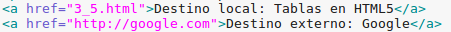
Enlaces en imágenes
Así como podemos enlazar un simple texto, podemos también poner un enlace en una imagen o cualquier elemento de HTML.
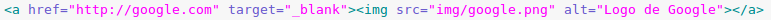
Enlaces internos
En ocasiones es necesario moverse de un punto a otro de la misma web a través de un enlace, para ello recurriremos a los enlaces internos.
En primer lugar tendremos que indicar con la etiqueta del enlace y el atributo id a que parte de la página queremos ir a través del enlace. Al ser un elemento vacío, lo cerraremos dentro del abierto.
Para hacer el enlace que irá hasta el id especificado, en el atributo href indicaremos el id con una almuhadilla delante.
Ir a atributos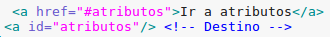
Atributos
Existen algunos atributos para la etiqueta a de los enlaces. Veamos cuáles son:
| Atributo | Descripción |
|---|---|
| href | URL de la dirección de destino |
| hreflang | Idioma de la página web de destino |
| rel | Relación entre la página web actual y la de destino. Más información en W3Schools |
| target | Especifica dónde será abierta la página web de destino. Frecuentemente utilizado _blank para abrir en una nueva pestaña. |
| type | Tipo de contenido en la página web de destino. |
Multimedia
Los html pueden llamar archivos multimedia mediante enlaces web o en ficheros locales, lo cual permite insertar dichos archivos en la página html mediante las distintas etiquetas posibles.
Etiqueta de Imagenes
La etiqueta usada para insertar imagenes en una página html es <img></img> dentro de esta etiqueta se debe poner
el atributo "src" el cual indica la dirección de la imagen, ya sea local o mediante un enlace externo,
y si se quiere tambien se puede poner el atributo "alt" el cual si hay un error al mostrar la imagen en el navegador,
muestra el texto escrito en su lugar.
Por ejemplo:
<img src="Carpeta/imagen.jpg" alt="No se puede mostrar la imagen"></img>
Etiqueta de Audios
La etiqueta que usan los audios es <audio></audio> dentro de esta etiqueta pueden aparecer varios atributos
como "loop" (para que se reproduzca el audio en bucle), "autoplay" (para que se reproduzca nada mas cargar la página)
o "muted" (para que este sin sonido predeterminadamente) entre otros más.
Como en la etiqueta img tambien debe contener el atributo "src" para saber la ubicacion del archivo de audio.
Por ejemplo:
<audio src="Carpeta/audio.mp3" autoplay loop></audio>
Etiqueta de Videos
La etiqueta usada para los videos es <video></video> dentro de esta etiqueta los atributos son practicamente
los mismos que en la etiqueta de audio a excepcion de "width" (para establecer el ancho del video) y "height" (para establecer el alto del video).
Como en las anteriores etiquetas esta tambien debe tener el atributo "src" para indicar la ruta del archivo.
Por ejemplo:
<video src="Carpeta/video.mp4" width="200" height="100"></video>
Canvas
Introducción
El elemento <canvas> </canvas>, o lienzo en español, es un elemento creado en HTML5 que nos permite crear un área para dibujar formar gráficas con JavaScript.
La etiqueta de HTML5 simplemente crea el contenedor de los gráficos, pero para pintarlos se usará JavaScript.
Atributos
Los atributos son:
| Atributo | Significado |
|---|---|
| id | Identifica el elemento. Imprescindible para usarlo con JavaScript. |
| width | Define la anchura del área. |
| height | Define la altura del área. |
| style | Aplica estilo al área, por ejemplo borde. |
Dibujando
Crear un cuadrado
Para dibujar un gráfico en el lienzo primero debemos crear el área en el HTML. En esta ocasión lo hago con un borde para verlo mejor.
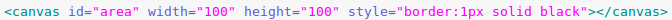
Ahora terminaremos con el JavaScript que introduciremos en el propio documento del HTML con las etiquetas <script> y </script>.
Obtenemos una referencia del área canvas realizado en HTML para trabajar con él:
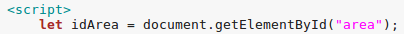Con getContext hacemos un objeto que contiene las propiedades y métodos de dibujo:
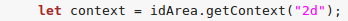Creamos un rectángulo o cuadrado, donde los atributos son posición X e Y, anchura y altura:
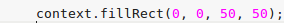Por defecto aparecerá en negro, podemos modificar la propiedad fillStyle para cambiarlo.
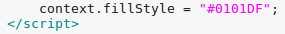Crear una línea
Coordenadas
Las coordenadas en canvas es una cuadrícula bidimensional donde la 0,0 corresponde a las esquina superior izquierda.
Por ejemplo: Si tenemos un área de dibujo de 100x100 y queremos trazar una línea desde la esquina superior izquierda hasta la inferior derecha tendremos que indicar que el punto de inicio sea 0,0 y el punto final 100x100.
Para hacer una línea tendremos que tener un área canvas con su contexto inicializado, así como hicimos con el cuadrado. Una vez hecho, procederemos a trazar la línea.
Nos movemos al punto donde queremos que empiece la línea:
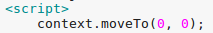Definimos el punto donde acabará:
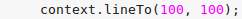Cambio el color por defecto de trazado:
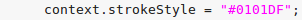Finalmente trazamos la línea:
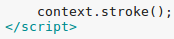Dibujar la línea
Crear un círculo
Utilizaremos el método arc para hacer un círculo. Este método hace una curva proporcionándole los siguientes atributos:
| Atributo | Significado |
|---|---|
| x | La coordendas x donde estará el centro del círculo |
| y | La coordendas y donde estará el centro del círculo |
| r | El radio o tamaño del círculo |
| sAngle | El ángulo donde empieza, en radianes |
| eAngle | El ángulo donde termina, en radianes |
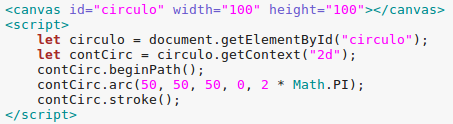
Crear gradientes
Con canvas podemos utilizar gradientes para rellenar figuras en lugar de utilizar un simple color sólido. Podemos usar dor tipos de gradientes, el lineal y el radial, además de poner todos los colores que queramos.
Gradiente lineal
Para empezar crearemos el gradiente que queremos con el método createLinearGradient y atributos x0,y0 (punto de inicio del gradiente), x1, y1 (punto final del gradiente).
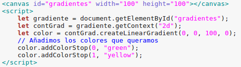Luego creamos la figura que queremos rellenar con el gradiente y se los aplicamos.
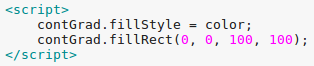Gradiente radial
Utilizaremos el método createRadialGradient para hacer un gradiente radial. Los atributos son x0,y0 (donde empieza el círculo gradiente), r0 (radio inicio del círculo), x1,y1 (donde termina el círculo gradiente), r1 (radio del círculo final).
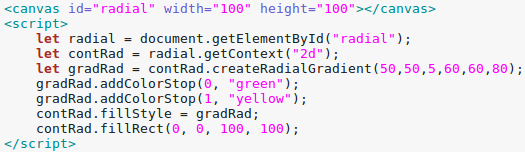Crear texto
Con canvas podemos dibujar texto con distintos formatos, veamos cómo se hace:
Como siempre empezaremos creando un contenedor canvas:
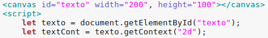En la propiedad font le asignamos el tamaño y el tipo de tipografía:
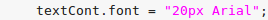Y con fillText indicamos el texto que quremos mostrar y en qué posición respecto al contenedor canvas:
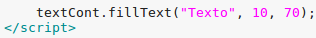Podemos utilizar strokeText en lugar de fillText para que nos muestre el contorno en vez de rellenarlo.
Además podemos hacer uso de las propiedades fillStyle/strokeStyle y textAlign para asignar un color y alineación, respectivamente.
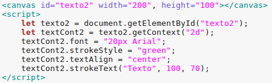Insertar imágenes
Podemos insertar imágenes en un contenedor canvas con el método drawImage cuyos atributos son id de la imagen, posición x e y.
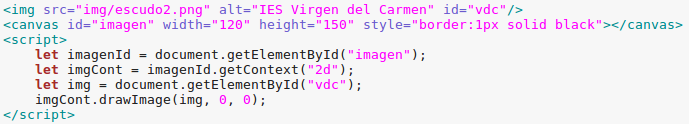
Como Enlazarlo
Para enlazar un CSS a nuestro HTML hay que introducir la etiqueta
"link" dentro de la etiqueta "head" de nuestro HTML.
Para ello la pondremos de la siguiente forma:
<link rel="stylesheet" type="text/css" href="main.css" />
Los atributos introducidos en la misma se usan para lo siguiente:
El atributo "rel" indica que es una hoja de estilos (CSS).
El atributo "type" indica el tipo de archivo que es, en este caso un documento de texto CSS.
Y por ultimo el atributo "href" indica la ruta local o la url donde se encuentra el archivo CSS.
Colores
Los colores en CSS pueden ser definidos con nombres predefinidos, RGB, HEX, HSL, RGBA o HSLA.
Colores predefinidos
Existen 140 colores estándares en HTML que podemos especificar por su nombre, algunos son:
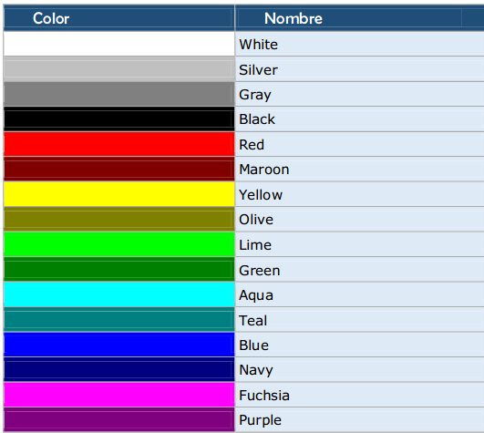El resto de colores puedes verlos en W3Schools.
Valor RGB
Puedes especificar un color con un valor RGB, es decir, declarando la intensidad del rojo, verde y azul. Veamos algunos ejemplos:
rgb(255, 0, 0)
rgb(0, 0, 255)
rgb(0, 0, 255)
rgb(238, 130, 238)
rgb(255, 165, 0)
Valor RGBA
El valor RGBA es una extención del RGB, añadiendo un cuarto parámetro alpha, para definir la transparencia del color. Ejemplos:
rgb(255, 0, 0, 75%)
rgb(0, 0, 255, 50%)
rgb(0, 0, 255, 25%)
La transparencia en el cuarto parámetro de rgba puede definirse en porcentaje o del 0.0 al 1.0 (transparente a opaco).
Valor hexadecimal
Al igual que definimos en RGB los valores de los colores en decimal, podemos hacerlo en hexadecimal con el siguiente formato: #rrggbb. Ejemplos:
#ff0000
#00ff00
#0000ff
#ff9900
#cc00ff
Valor HSL
HSL hace referencia a tonalidad, saturación y claridad (hue, saturation, lightness).
La tonalidad es un grado de la rueda de colores, desde el 0 hasta 360 grados, donde 0 es rojo, 120 es verde y 240 azul.
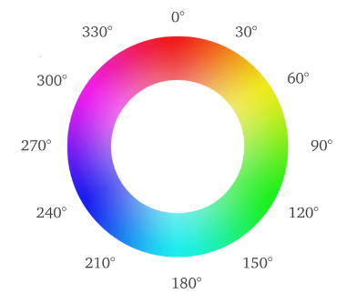La saturación es la intensidad del color, expresado en porcentaje, donde el 100% es el color puro, el 50% gris pudiéndose distinguir el color, y el 100% completamente gris.
La claridad se expresa también en porcentaje, donde 0% no tiene claridad (totalmente negro) y 100% claridad absoluta (completamente blanco). El valor intermedio sería el 50%, para obtener el color puro.
hsl(0, 100%, 50%)
hsl(120, 50%, 50%)
hsl(240, 100%, 65%)
hsl(30, 100%, 50%)
hsl(300, 100%, 50%)
Valor HSLA
El valor HSLA es igual es el HSL pero con un nuevo parámetro para definir la transparencia. Éste último puede expresarse con porcentaje o del 0.0 al 1.0 (transparente a opaco).
hsla(0, 100%, 50%, 0.75)
hsla(120, 100%, 50%, 0.5)
hsla(240, 100%, 50%, 0.25)
Fondos
Los fondos en CSS podemos aplicarlos a elementos como body, div o p. Veamos las propiedades para establecerlos:
Fondo de color
La propiedad background-color nos permite poner de fondo un color cualquiera.
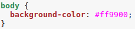Fondo con una imagen
Con background-image podemos poner una imagen de fondo. Por defecto será repetida por todo el elemento.
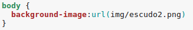
Repetición del fondo
Por defecto, cuando una imagen es establecida de fondo ésta se repite por todo el elemento vertical y horizontalmente. Esto podemos modificarlo con la propiedad background-repeat.
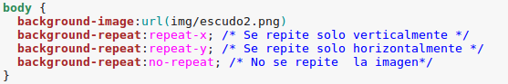Posición de imagen de fondo
Si decidimos no repetir la imagen de fondo, puede que queramos cambiar su posición. Para ello utilizaremos la propiedad background-position. Los parámetros a establecer son la posición horizontal y la vertical. Podemos indicar la posición con las palabras reservadas para ello (left, right, middle; top, bottom, center) o con las coordenadas en píxeles o porcentaje.
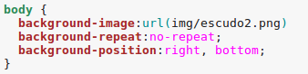
Desplazamiento del fondo
Por defecto una imagen de fondo se desplaza junto a todo el contenido cuando nos desplazamos por la página. Para que esto no suceda utilizaremos la propiedad background-attachment, con la propiedad scroll (valor por defecto) o fixed para que se quede el fondo fijo.
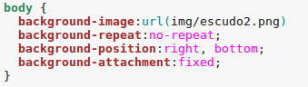Formato de fuente
Propiedades de las fuentes
CSS cuenta con numerosas propiedaes que modifican la, tipografía estas son:
• Línea base. Es la línea principal donde se colocan las letras, permite colocar adecuadamente en la horizontal al texto.
• Altura de la x. Mide el tamaño de la letra equis minúscula, que sirve de referencia para todas las letras minúsculas (aunque algunas como la g y la a del primer ejemplo la puedan rebasar).
• Ascendente. Línea superior que indica el máximo que puede ocupar las letras.
• Descendente. Línea inferior, posición máxima inferior que puede ocupar el texto.
• Altura mayúsculas. Línea superior máxima de las letras mayúsculas (se suele tomar la de la letra M mayúscula).
• Interlineado. Distancia entre dos líneas, se toma utilizando las líneas base.
• Interletrado. Distancia horizontal entre letra y letra. Ampliarla significaría más distancia entre cada letra de una palabra.
• Kerning. Es la distancia entre letra y letra pero aplicando distancias distintas en función de las letras.
• Cuerpo. La mayor parte de las tipografías actuales tiene tamaños (en horizontal) distintos de las letras. Los tipos de letra monoespaciados hacen que cada carácter ocupe lo mismo.
• Letras vectoriales y letras en mapa de bits. Hoy en día todas las tipografías son de tipo vectorial, guarda la fórmula para dibujar cada letra. Esto permite que al ampliar las letras nunca perdamos resolución.
• Familia. Hay dos grandes familias de letras las letras de tipo Serif y las SansSerif. Las primeras se distinguen por colocar patas en algunas letras; mientras que en forma sans serif no las tienen.
Además de estas dos famosas familias, CSS permite distinguir otras tres familias. En total son:
• Serif. Ya explicada, por ejemplo: Times, Garamond, Georgia, Bodoni, Bitstream Cyberbit, Baskerville, Bookman Old Style...
• Sans-serif. Ya explicada, por ejemplo: Arial, Verdana, Helvetica, Trebuchet, Gill Sans, Futura, Tahoma, Geneva, ...
• Cursive. Son letras normalmente inclinadas y muy ornamentadas que simulan la escritura manual. Por ejemplo: Zapf-Chancery, Comic Sans, Script MT, , Adobe Poetica, Monotype Corsiva, Brush Script...
• Fantasy. Letras muy ornamentadas que no están pensadas para el texto normal de un documento, pero sí se podría utilizar para sus títulos. Por ejemplo: Western, Impact, Copperplate, Artistik, Britannic Bold, Algerian, Herculanum…
• Monospaced. Letras monoespaciadas, cada letra ocupa lo mismo. Simulan escritura con máquina de escribir antigua. Ejemplos: Courier, Lucida Console, Consolas, Monaco, Liberation Mono, Andale Mono…propiedades de la fuente (tipografía)
font-size
Tamaño de la fuente en pantalla. Se puede especificar de tres maneras:
• En modo absoluto. Hace referencia a tamaños predefinidos.
• xx-small. Fuente muy pequeña.• En modo relativo. En este caso se aumenta o disminuye el tamaño de la letra sobre el tamaño que tenía la letra en el elemento que contiene al del estilo (elemento padre). Valores:
• x-small. Fuente pequeña.
• small. Fuente un poco pequeña.
• medium. Fuente normal.
• large. Fuente un poco grande.
• x-large. Fuente grande
• xx-large. Fuente muy grande
• smaller. Más pequeña• Modo exacto. En este caso se indica el tamaño de la letra con su valor númerico. Inmediatamente tras este número se indica la medida en la que se debe medir el número. Ejemplos: 12px, 2mm, 12pt, 1.2em, 120%,…
• larger. Más grandefont-family
Indica el tipo de letra.Todas las fuentes no están disponibles en todos los sistemas, por ello se suelen indicar varias opciones separadas por comas; de modo que si la primera no está disponible, se usa la siguiente.
Ejemplo:
p{font-family:”AvantGarde Bk”, Arial, Helvetica, sans-serif;}font-weight
Peso de la fuente (grosor). Valores posibles:
• normal. Espesor normal.
• bold. Negrita
• Número. Que puede ser: 100, 200, 300, 400, 500, 600, 700, 800 y 900. Ningún navegador soporta tantos pesos. Por lo que sólo funcionan bien las opciones normal y bold.font-style
Estilo de letra. Puede ser; normal, italic (cursiva) u oblique (normalmente se representa igual que la anterior).
font-variant
VERSALES (SMALL-CAPS). Valores: normal y small-caps.line-height
Permite calibrar el interlineado (la distancia entre cada línea). Se puede especificar de estas formas:
• Un número. Dicta la distancia multiplicando este número por la distancia normal. Es decir si indicamos 2, el interlineado será doble, si indicamos 1.5 será un 50% mayor de lo normal. • Un número seguido de una unidad de medida. Si indicamos 16px, entonces estamos indicando la distancia exacta entre cada línea (que será de 16 píxeles).font
Permite desde una sola propiedad cambiar en un solo golpe todas las anteriores. Su sintaxis es:
font: font-style font-variant font-weight font-size/line-height font-family;El orden tiene que ser estrictamente ese, pero algunas propiedades se pueden dejar sin utilizar. Ejemplos:
/*Letra cursiva y negrita de tipo Comic con opciones a Arial y Helvetica*/
font: italic bold 16pt “Comic Sans MS”, Arial, Helvetica, sans-serif;
/* Letra cursiva con versalitas de tamaño 18 puntos y 24 de puntos de distancia entre cada línea */
font: italic small-caps 18pt/24pt;
/* Letra cursiva */
font: italic;También nos permite utilizar las fuentes de los elementos del sistema operativo en el que estemos, concretamente:
• caption. Letra utilizada para los títulos.
• icon. Letra de los iconos
• menu. Letra de los menús
• message-box. Letra de los cuadros de diálogo
• small-caption. Letra de los controles pequeños.
• status-bar. Letra de las barras de estado.color
Color de la fuente. Utilizando cualquiera de los códigos de color explicados en el apartado de dicado a las unidades y medidas.
@font-face
Uno de los problemas más importantes es querer utilizar un tipo de letra sobre la que no es seguro que exista en el dispositivo de la persona que está viendo la página HTML.
CSS3 ha introducido el uso de esta directiva en el código CSS para precargar el tipo de letra necesario. Para ello deberemos utilizar el archivo que contiene el tipo de letra en sí. Dicho archivo puede ser ttf (letras de tipo True Type) u otf (Open Type). Si por ejemplo queremos utilizar el tipo de letra Artistik y disponemos del archivo Artistik.ttf que contiene el tipo de letra en sí. El código para que todos los párrafos la usen (con la seguridad de que sí saldría) es:@font-face{font-family:artistik;src: url('Artistik.ttf'), url('Artistik.eot');}
p {font-family: artistik;}En la parte @font-face hay que indicar al menos dos propiedades:
• font-family. Para dar nombre de familia a la letra que estamos importando. Ese nombre es el que luego utilizarán los selectores para elegir la letra que hemos cargado.
• src. En la que se indica una o más URL (separadas por comas) que apuntan a archivos de letras que se cargarán en la página para que se vea correctamente la letra.Además, opcionalmente se puede usar:
• font-weight. La propiedad ya vista anteriormente, que nos permitiría indicar si el tipo de letra es para negrita (bold) o para texto normal. • font-style. Ya vista anteriormente para indicar si la letra es cursiva o no. • font-stretch. Indica el grado de condensación de la letra (por defecto se toma normal):• normal
• condensed
• ultra-condensed
• extra-condensed
• semi-condensed
• expanded
• semi-expanded
• extra-expanded
• ultra-expandedUn problema es que estás características solo son soportadas por navegadores modernos y algunos son capaces de leer unos tipos y otros no.
En el futuro será habitual ya que asegura la misma apariencia de letra en cualquier dispositivo.
Formato del texto
Son propiedas que afectan al texto, usualmenta cambian el formato y aspecto de los párrafos y aspectos del texto no relacionados con su escritura
word-spacing
Indica la distancia entre las palabras del texto. Usa las mismas medidas que la
propiedad
Por ejemplo:
word-spacing:20px;
letter-spacing
Indica la distancia horizontal entre las letras del texto.
Ejemplo:
letter-spacing:20px;
text-decoration
• underline. Subrayado (línea por debajo del texto)
• overline. Línea por encima del texto.
• line-through. Tachado, línea que atraviesa el texto.
• blink. Parpadeo. No funciona en casi ningún navegador (sí en Firefox).
vertical-align
Posición vertical del texto (o imagen) respecto a su contenedor. Permite alinear en vertical un texto e indicar superíndices y subíndices.
Posibilidades:
• baseline. En la línea base inferior del texto.
• sub. Subíndice.
• super. Superíndice.
• top. Arriba respecto al elemento más alto de la línea.
• text-top. En la línea superior del texto.
• middle. Medio respecto a la altura del texto o contenedor en el que estemos.
• bottom. Abajo respecto al elemento más alto de la línea.
• text-bottom. En la línea inferior del texto.
• Porcentaje. Porcentaje respecto al texto (por ejemplo 120%)
text-align
Alineación horizontal del texto. Puede ser: left (izquierda), right (derecha), center (centrada) o justify (ajustada a derecha e izquierda).
Respectivamente:
• text-align:left;
• text-align:right;
• text-align:center;
• text-align:justify;
text-indent
Sangría de la primera línea del párrafo. Distancia extra que se deja a la primera línea respecto al resto de líneas.
Por ejemplo si indicamos, text-indent:50px; la primera línea del párrafo estará desplazada 50 píxeles hacia la derecha:
text-transform
Permite modificar el texto para que se muestre en mayúsculas o minúsculas.
• capitalize. La primera letra en Mayúsculas.
• uppercase. Mayúsculas.
• lowercase. Minúsculas.
• none. No hace ninguna transformación.
direction
Procede de CSS2, especifica la dirección en la que se escribe el texto.
Posibilidades:
• ltr. Left to right, de izquierda a derecha.
• rtl. Right to left, de derecha a izquierda.
text-overflow
Parte de CSS3. Indica que hacer con el texto cuando está dentro de un contenedor que no tiene el tamaño suficiente para mostrar todo el texto.
Posibilidades:
• clip. El texto sale recortado. Sólo se ve el texto que cabe en el contenedor, el resto no se muestra
• ellipsis. Como la anterior, pero se ponen … al final del texto recortado.
text-shadow
Se trata de una propiedad CSS3. Permite colocar una sombra al texto para darle efecto de volumen. Tiene esta sintaxis:
text-shadow: color distanciaX distanciaY desenfoque;
• color. Es el color de la sombra
• distanciaX. Es el desplazamiento horizontal que tendrá la sombra (puede ser positivo o negativo)
• distanciaY. Es el desplazamiento vertical que tendrá la sombra (puede ser positivo o negativo)
• desenfoque. Es opcional e indica cuánto se va a desenfocar la sombra. Se indica una cantidad que cuanto mayor sea, más desenfocará el fondo.
Clases e Ids
Estos atributos son situados dentro de cualquier etiqueta en el
HTML para que el CSS le de estilos al mismo. En un principio puede
parecer que sirven para exactamente lo mismo y se usan de la misma manera,
pero normalmente los ids solo se usan una vez por cada
HTML mientras que los class se usan las veces necesarias.
Otra cosa importante a tener en cuenta es que si una etiqueta contiene tanto el atributo "class"
como el atributo "id", predominara el "id", por lo que el estilo aplicado a esa etiqueta será el de el atributo "id".
Un ejemplo de uso seria el siguiente:
En HTML pondriamos:
<h1 id="Identificador" class="Clase">Contenido</h1>
<h2 class="Clase">Contenido</h2>
En CSS pondriamos:
#Identificador {color:orange} -> Para el atributo "id" ya que empieza por el símbolo "#"
.Clase {color:violet} -> Para el atributo "class" ya que empieza por el símbolo "."
De esta manera al abrir el HTML en el navegador, el contenido de la etiqueta "h1" saldría de color naranja,
ya que en este caso el atributo "id" predomina sobre el atributo "class" y el contenido de la etiqueta "h2"
saldria de color violeta.
Manual Accesibilidad
WCAG 1.0 y 2.0
La accesibilidad sirve para ayudar al usuario a entender todo en una página web
aqunque no tenga mucha idea e independientemente de sus dispositivos empleados.
De lo que se encarga WCAG es de hacer que la página sea perceptible, operable, entendible y robusta.
- Perceptible, añadiendo textos alternativos para otros tipos de contenido, creando contenido que se adapte en diferentes dispositivos y facilitando su uso al usuario.
- Operable, haciendolo totalmente funcional desde el teclado, dando el tiempo necesario a los usuarios y ayudando al usuario a navegar por la página.
- Entendible, haciendo el texto legible y corrigiendo los errores que pueda cometer el usuario.
- Robusta, para que cualquier navegador o herramienta sean compatibles.
Niveles de accesibilidad
Principios y directrices
Principio 1: Perceptible: la información y los componentes de la interfaz de usuario deben ser mostrados a los usuarios en formas que ellos puedan entender.
Directriz 1.1: Texto alternativo: Proporciona texto alternativo para el contenido que no sea textual, así podrá ser transformado en otros formatos que la gente necesite, como caracteres grandes, lenguaje braille (braile no es correcto), lenguaje oral, símbolos o lenguaje más simple.
Directriz 1.2: Contenido multimedia dependiente del tiempo: Proporcione alternativas sincronizadas para contenidos multimedia sincronizados dependientes del tiempo.
Directriz 1.3: Adaptable: Crear contenido que pueda ser presentado de diferentes formas sin perder ni información ni estructura.
Directriz 1.4: Distinguible: Facilitar a los usuarios ver y escuchar el contenido incluyendo la distinción entre lo más y menos importante.
Principio 2: Operable: Los componentes de la interfaz de usuario y la navegación debe ser manejable.
Directriz 2.1: Teclado accesible: Poder controlar todas las funciones desde el teclado.
Directriz 2.2 Tiempo suficiente: Proporciona tiempo suficiente a los usuarios para leer y utilizar el contenido.
Directriz 2.3: Ataques epilépticos: No diseñar contenido que pueda causar ataques epilépticos.
Directriz 2.4: Navegación: Proporciona formas para ayudar a los usuarios a navegar, a buscar contenido y a determinar donde están estos.
Principio 3: Comprensible. La información y las operaciones de usuarios deben ser comprensibles.
Directriz 3.1: Legible. Hacer contenido de texto legible y comprensible.
Directriz 3.2 Previsible: Hacer la apariencia y la forma de utilizar las páginas web previsibles.
Directriz 3.3 Asistencia a la entrada de datos: los usuarios de ayuda evitarán y corregirán errores.
Principio 4: Robustez: el contenido deber ser suficientemente robusto para que pueda ser bien interpretado por una gran variedad de agentes de usuario, incluyendo tecnologías de asistencia.
Directriz 4.1 Compatible: Maximiza la compatibilidad con los agentes de usuario actuales y futuros, incluyendo tecnologías de asistencia.
Niveles de adecuación
Nivel de conformidad: Uno de los siguientes niveles de conformidad se satisface por completo.
Nivel A: Para lograr conformidad con el Nivel A (el mínimo), la página web satisface todos los Criterios de Conformidad del Nivel A, o proporciona una versión alternativa conforme.
Nivel AA: Para lograr conformidad con el Nivel AA, la página web satisface todos los Criterios de Conformidad de los Niveles A y AA, o proporciona una versión alternativa conforme al Nivel AA.
Nivel AAA: Para lograr conformidad con el Nivel AAA, la página web satisface todos los Criterios de Conformidad de los Niveles A, AA y AAA, o proporciona una versión alternativa conforme al Nivel AAA.
Páginas completas: La conformidad (y los niveles de conformidad) se aplican a las páginas web completas, y no pueden ser alcanzadas si se excluye una parte de la página.
Procesos completos: Cuando una página web es parte de una serie de páginas web que presentan un proceso (es decir, una secuencia de pasos que es necesario completar para realizar una actividad), todas las páginas en ese proceso deben ser conformes con el nivel especificado o uno superior. (No es posible lograr conformidad con un nivel en particular si una de las páginas del proceso no cumple con ese nivel o uno superior).
Uso exclusivo de tecnologías de modo compatible con la accesibilidad: Sólo se puede depender de las tecnologías usadas de forma compatible con la accesibilidad para satisfacer los criterios de conformidad. Toda información o funcionalidad que se proporcione de una forma que no sea compatible con la accesibilidad debe estar disponible de una forma que sí sea compatible con la accesibilidad.
Sin interferencia: Si las tecnologías se usan de una forma que no es compatible con la accesibilidad, o están usadas de una forma que no cumple los requisitos de conformidad, no deben impedir a los usuarios acceder al contenido del resto de la página. Además, es necesario que la página web en su conjunto siga cumpliendo con los requisitos de conformidad en las siguientes circunstancias:
1.Cuando cualquier tecnología de la que no se depende está activada en una aplicación de usuario,
2.Cuando cualquier tecnología de la que no se depende está desactivada en una aplicación de usuario, y
3.Cuando cualquier tecnología de la que no se depende no es soportada por una aplicación de usuario
Además, los siguientes criterios de conformidad se aplican a todo el contenido de la página, incluyendo el contenido del que, de todos modos, no se depende para alcanzar la conformidad, ya que su incumplimiento puede interferir con el uso de la página:
1.4.2 - Control del audio,
2.1.2 - Sin trampas para el foco del teclado,
2.3.1 - Umbral de tres destellos o menos, y
2.2.2 - Poner en pausa, detener, ocultar.
Criterios de conformidad de nivel A
Son 25 criterios:
1.1.1 Contenido no textual
Todo contenido no textual que se presenta al usuario tiene una alternativa textual que cumple el mismo propósito, excepto en las situaciones enumeradas a continuación.
1.2.1 Sólo audio y sólo vídeo (grabado)
Para contenido sólo audio grabado y contenido sólo vídeo grabado, se cumple lo siguiente, excepto cuando el audio o el vídeo es un contenido multimedia alternativo al texto y está claramente identificado como tal: Sólo audio grabado: Se proporciona una alternativa para los medios tempodependientes que presenta información equivalente para el contenido sólo audio grabado. Sólo vídeo grabado: Se proporciona una alternativa para los medios tempodependientes o se proporciona una pista sonora que presenta información equivalente al contenido del medio de sólo vídeo grabado.
1.2.2 Subtítulos (grabados)
Se proporcionan subtítulos para el contenido de audio grabado dentro de contenido multimedia sincronizado, excepto cuando la presentación es un contenido multimedia alternativo al texto y está claramente identificado como tal.
1.2.3 Audiodescripción o Medio Alternativo (grabado)
Se proporciona una alternativa para los medios tempodependientes o una audiodescripción para el contenido de vídeo grabado en los multimedia sincronizados, excepto cuando ese contenido es un contenido multimedia alternativo al texto y está claramente identificado como tal.
1.3.1 Información y relaciones
La información, estructura y relaciones comunicadas a través de la presentación pueden ser determinadas por software o están disponibles como texto.
1.3.2 Secuencia significativa
Cuando la secuencia en que se presenta el contenido afecta a su significado, se puede determinar por software la secuencia correcta de lectura.
1.3.3 Características sensoriales
Las instrucciones proporcionadas para entender y operar el contenido no dependen exclusivamente en las características sensoriales de los componentes como su forma, tamaño, ubicación visual, orientación o sonido.
1.4.1 Uso del color
El color no se usa como único medio visual para transmitir la información, indicar una acción, solicitar una respuesta o distinguir un elemento visual.
1.4.2 Control del audio
Si el audio de una página web suena automáticamente durante más de 3 segundos, se proporciona ya sea un mecanismo para pausar o detener el audio, o un mecanismo para controlar el volumen del sonido que es independiente del nivel de volumen global del sistema.
2.1.1 Teclado
Toda la funcionalidad del contenido es operable a través de una interfaz de teclado sin que se requiera una determinada velocidad para cada pulsación individual de las teclas, excepto cuando la función interna requiere de una entrada que depende del trayecto de los movimientos del usuario y no sólo de los puntos inicial y final.
2.1.2 Sin trampas para el foco del teclado
Si es posible mover el foco a un componente de la página usando una interfaz de teclado, entonces el foco se puede quitar de ese componente usando sólo la interfaz de teclado y, si se requiere algo más que las teclas de dirección o de tabulación, se informa al usuario el método apropiado para mover el foco.
2.2.1 Tiempo ajustable
Para cada límite de tiempo impuesto por el contenido, se cumple al menos uno de los siguientes casos:
Apagar: El usuario puede detener el límite de tiempo antes de alcanzar el límite de tiempo; o
Ajustar: El usuario puede ajustar el límite de tiempo antes de alcanzar dicho límite en un rango amplio que es, al menos, diez veces mayor al tiempo fijado originalmente; o
Extender: Se advierte al usuario antes de que el tiempo expire y se le conceden al menos 20 segundos para extender el límite temporal con una acción simple (por ejemplo, "presione la barra de espacio") y el usuario puede extender ese límite de tiempo al menos diez veces; o
Excepción de tiempo real: El límite de tiempo es un requisito que forma parte de un evento en tiempo real (por ejemplo, una subasta) y no resulta posible ofrecer una alternativa al límite de tiempo; o
Excepción por ser esencial: El límite de tiempo es esencial y, si se extendiera, invalidaría la actividad; o
Excepción de 20 horas: El límite de tiempo es mayor a 20 horas.
2.2.2 Poner en pausa, detener, ocultar
Para la información que tiene movimiento, parpadeo, se desplaza o se actualiza automáticamente, se cumplen todos los casos siguientes:
Movimiento, parpadeo, desplazamiento: Para toda información que se mueve, parpadea o se desplaza, que (1) comienza automáticamente, (2) dura más de cinco segundos y (3) se presenta en paralelo con otro contenido, existe un mecanismo para que el usuario la pueda poner en pausa, detener u ocultar, a menos que el movimiento, parpadeo o desplazamiento sea parte esencial de una actividad; y
Actualización automática: Para toda información que se actualiza automáticamente, que (1) se inicia automáticamente y (2) se presenta en paralelo con otro contenido, existe un mecanismo para que el usuario la pueda poner en pausa, detener u ocultar, o controlar la frecuencia de actualización a menos que la actualización automática sea parte esencial de una actividad.
2.3.1 Umbral de tres destellos o menos
Las páginas web no contienen nada que destelle más de tres veces en un segundo, o el destello está por debajo del umbral de destello general y de destello rojo.
2.4.1 Evitar bloques
Existe un mecanismo para evitar los bloques de contenido que se repiten en múltiples páginas web.
2.4.2 Titulado de páginas
Las páginas web tienen títulos que describen su temática o propósito.
2.4.3 Orden del foco
Si se puede navegar secuencialmente por una página web y la secuencia de navegación afecta su significado o su operación, los componentes que pueden recibir el foco lo hacen en un orden que preserva su significado y operabilidad.
2.4.4 Propósito de los enlaces (en contexto)
El propósito de cada enlace puede ser determinado con sólo el texto del enlace o a través del texto del enlace sumado al contexto del enlace determinado por software, excepto cuando el propósito del enlace resultara ambiguo para los usuarios en general.
3.1.1 Idioma de la página
El idioma predeterminado de cada página web puede ser determinado por software.
3.2.1 Al recibir el foco
Cuando cualquier componente recibe el foco, no inicia ningún cambio en el contexto.
3.2.2 Al recibir entradas
El cambio de estado en cualquier componente de la interfaz de usuario no provoca automáticamente un cambio en el contexto a menos que el usuario haya sido advertido de ese comportamiento antes de usar el componente.
3.3.1 Identificación de errores
Si se detecta automáticamente un error en la entrada de datos, el elemento erróneo es identificado y el error se describe al usuario mediante un texto.
3.3.2 Etiquetas o instrucciones
Se proporcionan etiquetas o instrucciones cuando el contenido requiere la introducción de datos por parte del usuario.
4.1.1 Procesamiento
En los contenidos implementados mediante el uso de lenguajes de marcas, los elementos tienen las etiquetas de apertura y cierre completas; los elementos están anidados de acuerdo a sus especificaciones; los elementos no contienen atributos duplicados y los ID son únicos, excepto cuando las especificaciones permitan estas características.
4.1.2 Nombre, función, valor
Para todos los componentes de la interfaz de usuario (incluyendo pero no limitado a: elementos de formulario, enlaces y componentes generados por scripts), el nombre y la función pueden ser determinados por software; los estados, propiedades y valores que pueden ser asignados por el usuario pueden ser especificados por software; y los cambios en estos elementos se encuentran disponibles para su consulta por las aplicaciones de usuario, incluyendo las ayudas técnicas.
Criterios de conformidad de nivel AA
Son 13 criterios:
1.2.4 Subtítulos (en directo)
Se proporcionan subtítulos para todo el contenido de audio en directo de los multimedia sincronizados.
1.2.5 Audiodescripción (grabado)
Se proporciona una audiodescripción para todo el contenido de vídeo grabado dentro de contenido multimedia sincronizado.
1.4.3 Contraste (mínimo)
La presentación visual de texto e imágenes de texto tiene una relación de contraste de, al menos, 4.5:1, excepto en los siguientes casos:
Textos grandes: Los textos de gran tamaño y las imágenes de texto de gran tamaño tienen una relación de contraste de, al menos, 3:1.
Incidental: Los textos o imágenes de texto que forman parte de un componente inactivo de la interfaz de usuario, que son simple decoración, que no resultan visibles para nadie o forman parte de una imagen que contiene otros elementos visuales significativos, no tienen requisitos de contraste.
Logotipos: El texto que forma parte de un logo o nombre de marca no tiene requisitos de contraste mínimo.
1.4.4 Cambio de tamaño del texto
A excepción de los subtítulos y las imágenes de texto, todo el texto puede ser ajustado sin ayudas técnicas hasta un 200 por ciento sin que se pierdan el contenido o la funcionalidad.
1.4.5 Imágenes de texto
Si con las tecnologías que se están utilizando se puede conseguir la presentación visual deseada, se utiliza texto para transmitir la información en vez de imágenes de texto, excepto en los siguientes casos:
Configurable: La imagen de texto es visualmente configurable según los requisitos del usuario.
Esencial: Una forma particular de presentación del texto resulta esencial para la información que se transmite.
2.4.5 Múltiples vías
Se proporciona más de un camino para localizar una página web dentro de un conjunto de páginas web, excepto cuando la página es el resultado, o un paso intermedio, de un proceso.
2.4.6 Encabezados y etiquetas
Los encabezados y etiquetas describen el tema o propósito.
2.4.7 Foco visible
Cualquier interfaz de usuario operable por teclado tiene una forma de operar en la cuál el indicador del foco del teclado resulta visible.
3.1.2 Idioma de las partes
El idioma de cada pasaje o frase en el contenido puede ser determinado por software, excepto los nombres propios, términos técnicos, palabras en un idioma indeterminado y palabras o frases que se hayan convertido en parte natural del texto que las rodea.
3.2.3 Navegación coherente
Los mecanismos de navegación que se repiten en múltiples páginas web dentro de un conjunto de páginas web aparecen siempre en el mismo orden relativo cada vez que se repiten, a menos que el cambio sea provocado por el propio usuario.
3.2.4 Identificación coherente
Los componentes que tienen la misma funcionalidad dentro de un conjunto de páginas web son identificados de manera coherente.
3.3.3 Sugerencias ante errores
Si se detecta automáticamente un error en la entrada de datos y se dispone de sugerencias para hacer la corrección, entonces se presentan las sugerencias al usuario, a menos que esto ponga en riesgo la seguridad o el propósito del contenido.
3.3.4 Prevención de errores (legales, financieros, datos)
Para las páginas web que representan para el usuario compromisos legales o transacciones financieras; que modifican o eliminan datos controlables por el usuario en sistemas de almacenamiento de datos; o que envían las respuestas del usuario a una prueba, se cumple al menos uno de los siguientes casos:
Reversible: El envío es reversible.
Revisado: Se verifica la información para detectar errores en la entrada de datos y se proporciona al usuario una oportunidad de corregirlos.
Confirmado: Se proporciona un mecanismo para revisar, confirmar y corregir la información antes de finalizar el envío de los datos.
Criterios de conformidad de nivel AAA
Son 23 criterios:
1.2.6 Lengua de señas (grabado)
Se proporciona una interpretación en lengua de señas para todo el contenido de audio grabado dentro de contenido multimedia sincronizado.
1.2.7 Audiodescripción ampliada (grabada)
Cuando las pausas en el audio de primer plano son insuficientes para permitir que la audiodescripción comunique el significado del vídeo, se proporciona una audiodescripción ampliada para todos los contenidos de vídeo grabado dentro de contenido multimedia sincronizado.
1.2.8 Medio alternativo (grabado)
Se proporciona una alternativa para los medios tempodependientes, tanto para todos los contenidos multimedia sincronizados grabados como para todos los medios de sólo vídeo grabado.
1.2.9 Sólo audio (en directo)
Se proporciona una alternativa para los medios tempodependientes que presenta información equivalente para el contenido de sólo audio en directo.
1.4.6 Contraste (mejorado)
La presentación visual de texto e imágenes de texto tiene una relación de contraste de, al menos, 7:1, excepto en los siguientes casos:
Textos grandes: Los textos de gran tamaño y las imágenes de texto de gran tamaño tienen una relación de contraste de, al menos, 4.5:1.
Incidental: Los textos o imágenes de texto que forman parte de un componente de la interfaz de usuario inactivo, que son simple decoración, que no resultan visibles para nadie o forman parte de una imagen que contiene otros elementos visuales significativos, no tienen requisitos de contraste.
Logotipos: El texto que forma parte de un logo o nombre de marca no tiene requisitos de contraste mínimo.
1.4.7 Sonido de fondo bajo o ausente
Para el contenido de sólo audio grabado que (1) contiene habla en primer plano, (2) no es un CAPTCHA sonoro o un audiologo, y (3) que no es una vocalización cuya intención principal es servir como expresión musical (como el canto o el rap), se cumple al menos uno de los siguientes casos:
Ningún sonido de fondo: El audio no contiene sonidos de fondo.
Apagar: Los sonidos de fondo pueden ser apagados.
20 dB: Los sonidos de fondo son, al menos, 20 decibelios más bajos que el discurso en primer plano, con la excepción de sonidos ocasionales que duran solamente uno o dos segundos.
1.4.8 Presentación visual
En la presentación visual de bloques de texto, se proporciona algún mecanismo para lograr lo siguiente:
Los colores de fondo y primer plano pueden ser elegidos por el usuario.
El ancho no es mayor de 80 caracteres o signos (40 si es CJK).
El texto no está justificado (alineado a los márgenes izquierdo y derecho a la vez).
El espacio entre líneas (interlineado) es de, al menos, un espacio y medio dentro de los párrafos y el espacio entre párrafos es, al menos, 1.5 veces mayor que el espacio entre líneas.
El texto se ajusta sin ayudas técnicas hasta un 200 por ciento de modo tal que no requiere un desplazamiento horizontal para leer una línea de texto en una ventana a pantalla completa.
1.4.9 Imágenes de texto (sin excepciones)
Las imágenes de texto sólo se utilizan como simple decoración o cuando una forma de presentación particular del texto resulta esencial para la información transmitida.
2.1.3 Teclado (sin excepciones)
Toda la funcionalidad del contenido se puede operar a través de una interfaz de teclado sin requerir una determinada velocidad en la pulsación de las teclas.
2.2.3 Sin tiempo
El tiempo no es parte esencial del evento o actividad presentada por el contenido, exceptuando los multimedia sincronizados no interactivos y los eventos en tiempo real.
2.2.4 Interrupciones
El usuario puede postergar o suprimir las interrupciones, excepto cuando las interrupciones implican una emergencia.
2.2.5 Re-autentificación
Cuando expira una sesión autentificada, el usuario puede continuar la actividad sin pérdida de datos tras volver a identificarse.
2.3.2 Tres destellos
Las páginas web no contienen nada que destelle más de tres veces por segundo.
2.4.8 Ubicación
Se proporciona información acerca de la ubicación del usuario dentro de un conjunto de páginas web.
2.4.9 Propósito de los enlaces (sólo enlaces)
Se proporciona un mecanismo que permite identificar el propósito de cada enlace con sólo el texto del enlace, excepto cuando el propósito del enlace resultara ambiguo para los usuarios en general.
2.4.10 Encabezados de sección
Se usan encabezados de sección para organizar el contenido.
3.1.3 Palabras inusuales
Se proporciona un mecanismo para identificar las definiciones específicas de palabras o frases usadas de modo inusual o restringido, incluyendo expresiones idiomáticas y jerga.
3.1.4 Abreviaturas
Se proporciona un mecanismo para identificar la forma expandida o el significado de las abreviaturas.
3.1.5 Nivel de lectura
Cuando un texto requiere un nivel de lectura más avanzado que el nivel mínimo de educación secundaria una vez que se han eliminado nombres propios y títulos, se proporciona un contenido suplementario o una versión que no requiere un nivel de lectura mayor a ese nivel educativo.
3.1.6 Pronunciación
Se proporciona un mecanismo para identificar la pronunciación específica de las palabras cuando el significado de esas palabras, dentro del contexto, resulta ambiguo si no se conoce su pronunciación.
3.2.5 Cambios a petición
Los cambios en el contexto son iniciados únicamente a solicitud del usuario o se proporciona un mecanismo para detener tales cambios.
3.3.5 Ayuda
Se proporciona ayuda dependiente del contexto.
3.3.6 Prevención de errores (todos)
Para las páginas web que requieren al usuario el envío de información, se cumple al menos uno de los siguientes casos:
Reversible: El envío es reversible.
Revisado: Se verifica la información para detectar errores en la entrada de datos y se proporciona al usuario una oportunidad de corregirlos.
Confirmado: Se proporciona un mecanismo para revisar, confirmar y corregir la información antes de finalizar el envío de los datos.
Pulsa aquí para obtener mas información sobre la accesibilidad y los niveles A, AA y AAA.
Normativa de accesibilidad
En España desde el 1998 existen leyes y normativas que definen los requisitos de accesibilidad para contenidos en la Web. Veamos las actualmente vigentes:
LEY 34/2002, de 11 de julio, de servicios de la sociedad de la información y de comercio electrónico.
Es la primera ley en España que obliga a hacer accesibles las páginas webs de las Administraciones Públicas. Los criterios para cumplir la accesibilidad son ambiguos y no se logra el objetivo para la fecha límite (31 de diciembre de 2005).
Esta ley está definida en el BOE 166 del 12 de julio de 2002.
ORDEN PRE/1551/2003, de 10 de junio, porla que se desarrolla la Disposición final primera del Real Decreto 209/2003, de 21 defebrero, por el que se regulan los registros y las notificaciones telemáticas, así como lautilización de medios telemáticos para la sustitución de la aportación de certificados por los ciudadanos.
En el séptimo punto de la order se define que el registro telemático deberá cumplir los requerimientos en materia de accesibilidad establecidos por la Iniciativa WAI del consorcio WWW, y en particular las especificaciones del nivel AA.
Puedes encontrarlo en el BOE 141 del 13 de junio de 2003, página 22892.
REAL DECRETO 366/2007, de 16 de marzo, por el que se establecen las condiciones de accesibilidad y no discriminación de las personas con discapacidad en sus relaciones con la Administración General del Estado.
En este decreto se regula las condiciones de accesibilidad de documentos e impresos disponibles en páginas web de la Administración General del Estado.
Está en el BOE 072 del 24 de marzo de 2007.
LEY 11/2007, de 22 de junio, de acceso electrónico de los ciudadanos a los Servicios Públicos.
Se establece como principio general garantizar la accesibilidad universal y el diseño para todos de los soportes, canales y entornos con objeto de que todas las personas puedan ejercer sus derechos en igualdad de condiciones.
Puede ser encontrado en el BOE 150 del 23 de junio de 2007.
LEY 27/2007, de 23 de octubre, por la que se reconocen las lenguas de signos españolas y se regulan los medios de apoyo a la comunicación oral de las personas sordas, con discapacidad auditiva y sordociegas.
El objetivo de la ley es reconocer la lengua de signos como la lengua de las personas sordas, sordociegas y con discapacidad auditiva. En el artículo 14 establece que las páginas web de titularidad pública, así como las financiadas con fondos públicos, deberán adaptarse a las personas anteriormente mencionadas.
Esta ley puede ser encontrada en el BOE 255 del 24 de octubre de 2007.
LEY 56/2007, de 28 de diciembre, de Medidas de Impulso de la Sociedad de la Información.
Esta ley obliga a las Administraciones Públicas a informar sobre el nivel de accesibilidad que tiene la página web. Además, las empresas que tengan más de 100 trabajadores o su volumen anual de operaciones exceda de 6.010.121,04€, y que se dediquen a los siguientes sectores, deberán de tener nivel de accesibilidad nivel AA del W3C.
- Servicios de comunicaciones electrónicas a consumidores.
- Servicios financieros destinados a consumidores.
- Servicios de suministro de agua a consumidores.
- Servicios de suministro de gas al por menor.
- Servicios de suministro eléctrico a consumidores finales.
- Servicios de agencia de viajes.
- Servicios de transporte de viajeros por carretera, ferrocarril, por vía marítima, o por vía aérea.
- Actividades de comercio al por menor.
LEY 7/2010, de 31 de marzo, General de la Comunicación Audiovisual.
La ley define que las personas con discapacidad visual o auditiva tienen el derecho a una accesibilidad universal a la comunicación audiovisual. Por tanto, todas las páginas web de servicio de comunicación audiovisual deberán ser accesibles de acuerdo con las posibilidades tecnológicas.
La ley la puedes encontrar en la disposición 5292 del BOE 79 del 1 de abril de 2010.
LEY 26/2011, de 1 de agosto, de adaptación normativa a la Convención Internacional sobre los Derechos de las Personas con Discapacidad.
Respecto a la accesibilidad web esta ley establece que las páginas web que sirvan de soporte o canal a las redes sociales en línea deberán satisfacer, a partir del 31 de diciembre de 2012, el nivel medio de los criterios de accesibilidad al contenido generalmente reconocidos. No será obligatorio cuando una funcionalidad o servicio no tenga una solución tecnológica que permita su accesibilidad.
Esto puede verse en el artículo 16 de la disposición 13241 del BOE 184 del 2 de agosto de 2011.
RESOLUCIÓN de 3 de septiembre de 2012, de la Dirección General de Industria y de la Pequeña y Mediana Empresa, por la que se publica la relación de normas UNE aprobadas por AENOR durante el mes de julio de 2012.
En esta resolución se publica la relación de normas (UNE 139803:2012) aprobadas para la accesibilidad web. Esta norma es equivalente a las WCAG 2.0.
La resolución y las normas pueden encontrarse en la disposición 12326 del BOE 237 del 2 de octubre de 2012.
REAL DECRETO LEGISLATIVO 1/2013, de 29 de noviembre, por el que se aprueba el Texto Refundido de la Ley General de derechos de las personas con discapacidad y de su inclusión social.
Esta ley unifica varias leyes derogadas que no se muestran en este artículo. El objetivo de ésta es garantizar el derecho a la igualdad de oportunidades y de trato, así como establecer el régimen de infracciones y sanciones que garantizan las condiciones básicas en materia de igualdad de oportunidades, no discriminación y accesibilidad universal de las personas con discapacidad.
En el artículo 24 hace referencia a las condiciones básicas de accesibilidad y no discriminación en el ámbito de los productos y servicios relacionados con la sociedad de la información y medios de comunicación social.
En último lugar recalcaría las sanciones, en el artículo 83, que irán desde un mínimo de 301 euros hasta un máximo de 1.000.000 de euros. Para las infracciones leves, la sanción no excederá de los 30.000€, para las graves no excederá de los 90.000€.
Puedes encontrar este Real Decreto en la disposición 12632 del BOE 289 del 3 de diciembre de 2013.
Las normas anuladas y las leyes derogadas no se incluyen en este artículo.